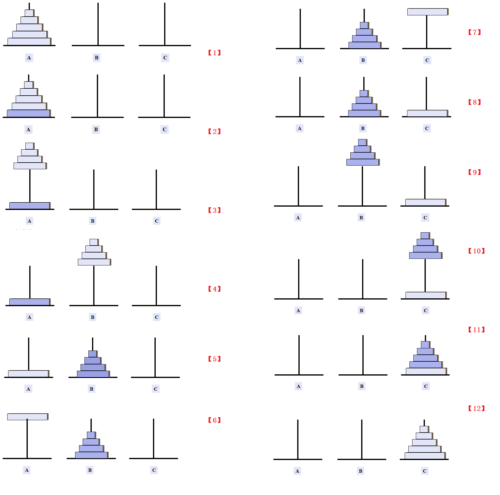
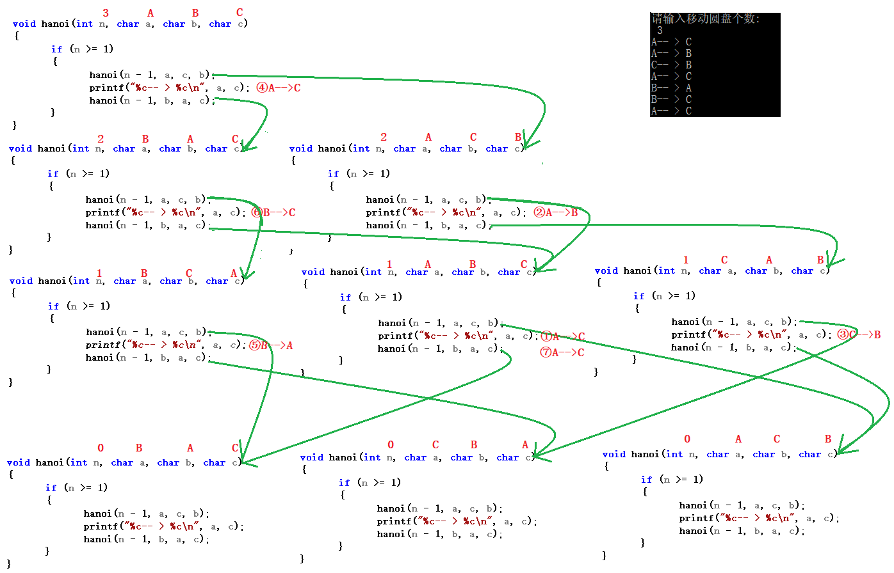

简介
相传在古印度圣庙中，有一种被称为汉诺塔(Hanoi)的游戏。该游戏是在一块铜板装置上，有三根杆(编号A、B、C)，在A杆自下而上、由大到小按顺序放置64个金盘(如下图)。游戏的目标：把A杆上的金盘全部移到C杆上，并仍保持原有顺序叠好。操作规则：每次只能移动一个盘子，并且在移动过程中三根杆上都始终保持大盘在下，小盘在上，操作过程中盘子可以置于A、B、C任一杆上。
思想

C语言实现
void hanoi(int n, char a, char b, char c)
n - 为移动圆盘个数
a b c - 分别为三根针
实现功能 - a上的n个圆盘移动到c上
当只移动一个圆盘时，直接将圆盘从 A 针移动到 C 针。 若移动的圆盘为 n(n>1)，则分成几步走： 把 (n-1) 个圆盘从 A 针移动到 B 针（借助 C 针）； A 针上的最后一个圆盘移动到 C 针； B 针上的 (n-1) 个圆盘移动到 C 针（借助 A 针）。 每做一遍，移动的圆盘少一个，逐次递减，最后当 n 为 1 时，完成整个移动过程。
#include <stdio.h>
void hanoi(int n, char a, char b, char c)
{
if (n >= 1)
{
hanoi(n - 1, a, c, b);//把n - 1个盘子从a移到c借助b
printf("%c-- > %c\n", a, c);
hanoi(n - 1, b, a, c);//把n - 1个盘子从b柱移到a柱借助c
}
}
void main()
{
int n;
printf("请输入移动圆盘个数:\n ");
scanf("%d", &n);
hanoi(n, 'A', 'B', 'C');
}
